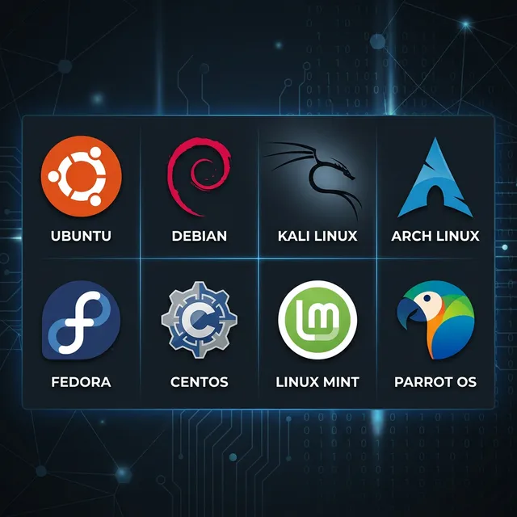

Linux Overview
The open-source OS that powers the internet, the cloud, and every serious penetration tester's workstation.
What is Linux?
Linux is a family of open-source Unix-like operating systems based on the Linux kernel, first released on September 17, 1991, by Linus Torvalds. The name comes from combining "Linus" and "Unix."
Unlike Windows or macOS, Linux is fully open-source — anyone can view, modify, and distribute its source code. This radical openness is why it powers over 96% of the world's top web servers, all 500 of the world's fastest supercomputers, the Android mobile OS, and virtually every embedded system on Earth.
Linux is typically distributed as a distro — the kernel bundled with a package manager, shell, and software suite tailored for a specific purpose.
Linux Architecture
Linux follows a layered architecture. Each layer abstracts the one below it, giving user programs a clean, hardware-independent interface:
Applications
User-space programs — web browsers, text editors, security tools (Nmap, Metasploit, Burp Suite). These interact only with the shell or system libraries, never directly with hardware.
Shell (CLI / GUI)
The command-line interface (Bash, Zsh, Fish) or desktop environment (GNOME, KDE). It translates user commands into system calls that the kernel can execute.
System Libraries (glibc)
Provide standard functions (like printf, malloc) that programs use. They act as an API between
applications and system calls, so apps don't need to write assembly code to talk to the
kernel.
Linux Kernel
The core of the OS. Manages process scheduling, memory management, device drivers, networking stack, and file systems. It runs in privileged "kernel space" — completely separated from user applications for security.
Hardware
The physical components — CPU, RAM, Storage (SSD/HDD), Network Interface Card, GPU. The kernel talks directly to hardware through device drivers, so applications never need to know what hardware they're running on.
Linux Distributions (Distros)
Because the Linux kernel is open-source, different organisations package it with different shells, package managers, and software to create a Distribution. There are hundreds of distros — here are the most important ones in the security world:

Major Linux Distributions used in security, servers, and desktop computing
Debian Family
Package manager: APT / .debThe oldest and most influential Linux family. Debian itself is the upstream project; Ubuntu and Kali Linux are both derived from it. Known for exceptional stability and the massive APT ecosystem. The default choice for web servers and beginners.
Red Hat Family
Package manager: DNF/YUM / .rpmEnterprise-focused with long-term support cycles. RHEL (Red Hat Enterprise Linux) is the gold standard for corporate data centers. Fedora is the upstream bleeding-edge testing ground. Rocky Linux and AlmaLinux replaced CentOS after it was discontinued.
Arch Family
Package manager: Pacman / AURA rolling-release model — always has the latest packages, updated continuously. Designed for power users who want full control. You build the system from scratch: minimal base install, then add exactly what you need. Arch Wiki is legendary.
Security / Pentest
Purpose-built for hackingThese distros come pre-loaded with hundreds of security tools — no manual installation needed. Kali Linux (Debian-based) is the industry standard for Red Teams. Parrot OS is lighter and privacy-focused. BlackArch (Arch-based) has 2800+ tools.
Privacy & Anonymity
Leave no trace, full anonymityTails routes all traffic through the Tor network and leaves no trace on the host machine — designed for journalists and whistleblowers. Whonix uses VM isolation. Qubes OS uses hardware virtualisation to isolate every application.
Enterprise Servers
Corporate data centre gradeHardened and certified distributions designed for 99.99% uptime in production environments. Ubuntu Server is the most widely deployed cloud OS. SUSE provides enterprise tools and formal support contracts. Used by AWS, Google Cloud, and Azure internally.
Key Differences Between Distros
They all share the same Linux kernel — so what actually differs? The main divergences are:
- Package Managers: How software is installed. Debian uses
apt, Red Hat usesdnf, Arch usespacman. This determines what software is available and how dependencies are resolved. - Update Cycle: "Stable" releases (Ubuntu LTS, Debian) release fixed versions tested over months/years. "Rolling" releases (Arch, Manjaro) push updates as soon as they're ready — always bleeding edge but occasionally unstable.
- Default Desktop Environments: Ubuntu defaults to GNOME, Fedora uses GNOME, Kali uses Xfce (lightweight), Manjaro offers KDE Plasma. The DE is replaceable on any distro.
- Init System: Most modern distros use
systemd. Void Linux and a few others userunitorOpenRC— a philosophical divide in the Linux community. - Intended Audience: Kali → security professionals, Ubuntu → beginners/devs, RHEL → enterprise sysadmins, Arch → power users who want full control.
Why Linux Dominates Cybersecurity
You will rarely find a serious security professional using Windows as their primary attacking machine. Here is exactly why:
Granular Control
Full root access to network stack, kernel parameters, memory handling, and file permissions. Nothing is hidden from you.
Tool Availability
Metasploit, Nmap, Aircrack-ng, Wireshark, Burp, Hydra — all built natively for Linux. Raw socket APIs Windows locks down are fully open here.
Bash Automation
Script entire recon pipelines, auto-enumerate targets, parse tool output, and chain exploits — all in native Bash.
Lightweight
Headless (no GUI) Linux servers run dozens of parallel tools on the same RAM that Windows needs just to boot the UI.
Open Source Kernel
Read the kernel source to understand exactly how syscalls work. Create custom kernel modules for rootkits, packet capture, or exploit development.
Community & Docs
ArchWiki, man pages, and a massive global community. Every tool has detailed documentation and community walkthroughs.